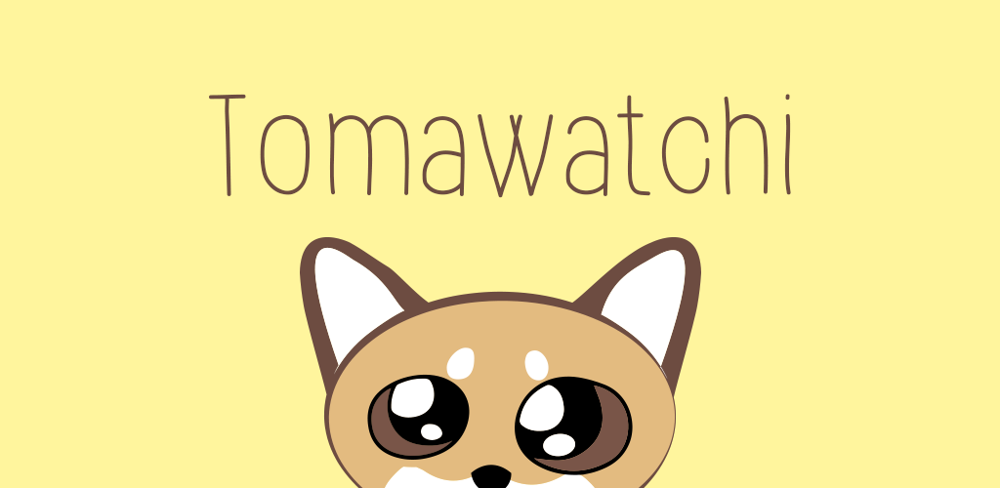

Tomawatchi Privacy Policy
(Last updated - 3/10/15)
Welcome to Tomawatchi ("Tomawatchi," "we," "us" or "our").
Tomawatchi is a playful application to promote physical exercise through step counting.
We do not store or share any of your health information with any third parties.
All health data is stored locally on your device.
With your permission, we simply read the step count that your device has.
Information we collect:
What you allow us to - At this time, we are only requesting step counting data.
How we use information:
This app allows you to create a personal pet to exercise with you through your day.
We maintain the fitness property of your pet through calculating how many steps you've taken per day.
We may change this privacy policy from time to time. But when we do, we will be sure to let you know.
If you ever have a question about our Privacy Policy, please email us at tomawatchi@gmail.com